Archives : 2006-08
塞班之斗鸡 @ Aug 31, 2006
当地土著人用激素喂养斗鸡，人不能食用。斗鸡赌注一般为USD300.00，据说斗鸡的脚上会绑上刀片，第一脚被蹬到的鸡肯定就开躺破肚了。国人好赌成性，有中国人的地方就有赌博。天宁岛有一个中国人建造的赌场，没有前往天宁所以不知道那座赌场会有多华丽？
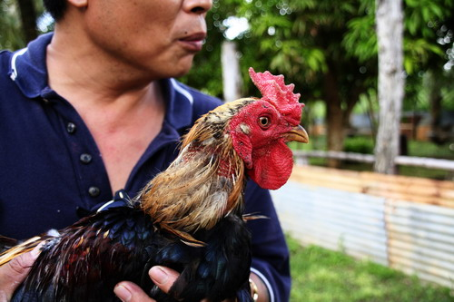
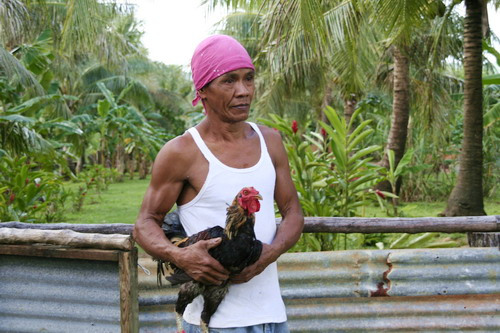
塞班之音像店 @ Aug 31, 2006
塞班唯一一家音像店，在国内卖盗版音像制品习以为常，走进去这家店开始感觉挺严肃挺庄重，看着看着感觉正版碟和盗版碟区别不大，就是价钱上贵出N倍。两个喜欢音乐的同事买了150美元左右的碟子，我买一套美国偶像集锦的DVD，USD21.00，不换算成RMB，按照当地收入水平应该不算贵了吧？店里SONY的PSP折算人民币大约要4000，国内现在卖价2000元不到。电子产品一天一个价。


塞班之晨 @ Aug 31, 2006
4点半从酒店驾车到塞班最北端的万岁崖，打算观看日出。然而天公不作美，太阳一直被浓厚的云彩遮挡着，后来听导游说，塞班观日出最好在4-6月间，晕~~其实想看日出找片麦田也一样看，不过会少了太阳跳出海平面的壮观！这张照片虽然没有日出景象，却依然是我所喜爱的氛围，大图层次更细腻。出发前特别买了BERO的三脚架和球型云台，走的时候嫌体积过大，还是带着60元的铝合金三脚架前往，只在那天的黎明派上用场。值？不值？还是值得的吧~
回酒店的路上天蒙蒙亮了，房屋山脉在天地之间，天与地被清晰的分割，从照片上依稀还能感受到夏日清晨的空气，天色越来越明亮时身体的汗腺会随之沸腾。喜欢这样的早晨......微亮的天色，没有阳光，没有人，安静的汗腺，风轻轻拂过来~
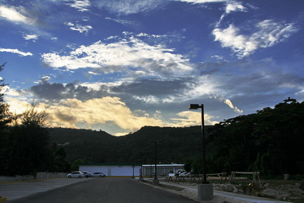
塞班之万岁崖（Suicide Cliff） @ Aug 30, 2006
塞班有两处Suicide Cliff，顺着路标寻到北端这处有尊雕像的断崖山顶，逆光下拍摄这副纪念雕塑，忧郁的色调与构图，有点触动！日本人骨子里有些极致的东西让人不能理解...
背景：塞班岛北端的自杀崖和万岁崖，在“自发随行”的二战 ... 当年，日本占领军意识到失落塞班岛已成定局，为避免被俘，军人在最北端的断崖，面对象征日本的北边高喊“万岁”而跳海自杀，当地称为“万岁崖”；一般居民则在“万岁崖”的南边高地跳崖自杀，后人称为“自杀崖”。

塞班归来 @ Aug 28, 2006
回来了，好累啊......肩膀晒得红红的，脸上蒙了一层淡淡的黑纱。不过度假的过程的确令人愉悦而难忘。那里很适合两人行或一家人去，团队旅行多少都脱不去小环境的旧氛围，这便是我倾向自助旅行的主要原因。
塞班与大多数海岛似乎并无大的区别，矮矮的房屋，窄小的马路，普遍破旧的建筑，空旷的原野，淳朴的居民，临海的敞开式的酒店大厅，蓝天白云细纱......如果只是为了看海可以选择方便的海南三亚。北马里亚纳群岛在西太平洋和菲律宾海区域，二战后塞班为美国自治州，地图上很难找到。由于欧美直飞塞班的航班不如飞泰国的多，所以那里的欧美游客寥寥无几，每天日本有两个航班飞塞班，中国的广州和上海每周有一班，日韩游客多，中国游客占1/3。塞班大约7万人口，其中有1万中国人在那里定居。当地居民享受与美国同等的福利待遇，孩子上学、居民就医均免费，低保每月USD230。早几年韩国人在岛上开的服装厂，从中国延边地区招了很多工人过去工作，据说服装厂关闭后，一些中国人不愿回国继续留在当地打工，他们只享有在塞班的工作权，不能前往美国其他地区工作。有些中国女子找不到工作只好从事性服务，月收入在1万美圆，可大多都赌掉了。有些中国人收入很低，每月只有USD500，租房子得USD200，剩余吃饭都很紧张，根本存不下多少钱，想买张回国的机票都不可能。也有在店里做营业员的，在塞班做导游据说每月可以有1万DOLLAR的收入，算是很不错的了。在那里工作得通英日韩三国语言，
当地土著人的查莫洛语也得会。服务业的工作人员一般会说日语和英语，如果你略懂这两门语言，便可以自行前往塞班旅行。
我们居住的是FIESTA酒店，位于塞班繁华的市中心，与红灯区面对面，酒店朝东是一个不大的停车场，西面临海。那里的色情业都是公开的，超市公开出售成人DVD，在一家CRAZY TOYS商店里还看到各式condom，有的包装成棒棒糖，开始我真的以为是棒棒糖，看了半天觉得很有意思，旁边同事说这是condom，我才看明白。店里的营业员拿着一个小小的衣服形状塑胶包装的液体对我说：“这个是很有名的’西班牙苍蝇’，可以倒在饮料里喝......”，问了同事才知道这是春药。到达塞班的凌晨就看见酒店对面有家门头写着“红樱桃成人的店”的灯箱，诸如浅草、指压、放题等等门头的商店在FIESTA周围抬头可见。
塞班以日本车居多，其次是Ford。期间与同事合租了四辆车：Mazda RX8，Mazda MX5，Ford Focus，Ford Mustang。有关租车费用需要整理一下再做介绍。我最喜欢Mazda MX5，因为时间太短感觉开的不过瘾，当地人说这款车的售价大约在2.9万美元，这个价位在中国肯定要卖疯了。
HERTS租车公司，一个集装箱房子里放着办公桌椅、电脑，一张供客人坐的小沙发，一张茶几，工作人员是个光头日本人，英语发音很有日本人特点。
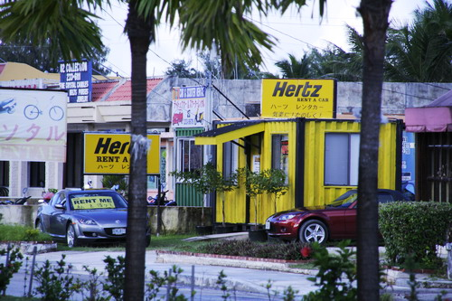
Mazda RX8，24小时租金是USD125+USD19税金
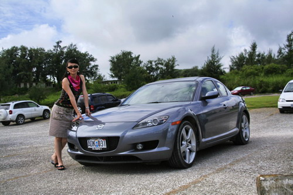
Ford Mustang，外型看上去不错，里面已经很是破旧了，但老款的Mustang操控性还行，避震较软。那么鲜亮的跑车，敞蓬开依然很拉风哦！
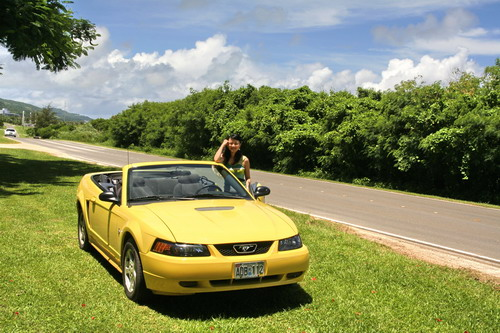
Mazda MX5，前一天预定这款车，但当天得到中午才能提到，所以上午HERTS给了Ford Mustang让我们先开着，中午再去换车。两辆车一共USD150，免去税金。这款车驾驶起来很轻，提速也快，但极速一般般。价格大约在USD29000左右，这个价格在国内如果家里买第二部车可以考虑，然而国内开敞蓬肯定吹的满鼻子灰，软顶在国内会比较新鲜，可停放在外面时会担心被心态不好的人故意划伤。想来国内还是朴素低调点好。
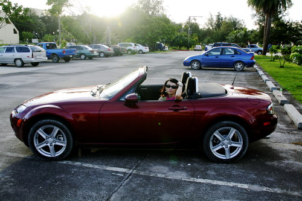

车尾写着“My husband is serving U.S.ARMY.”及“Army’s wife”

刚看见这间店时以为是色情服务场所，后来才知道是卖色情音像制品的，也许同时也提供其他服务。大陆人看到这个的确会好奇和惊讶，国内类似的店最明目张胆也就是亮起粉红色的灯光，绝对不会赤裸裸的写着这样的店名。塞班的旅游业占政府收入的50%，估计色情业也是财政之一吧？！奇怪的现象，海岛一般色情业都比较发达！
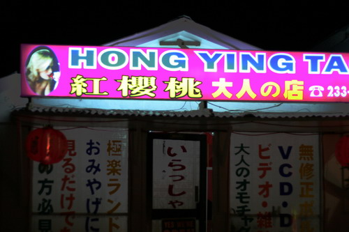
有没有注意到皮卡上的车牌“2 SEXY”，有意思。我在CRAZY TOYS商店里买了个粉红色车牌“2CUTE4YOU”，得换带锁的车牌框，只能在晚间换着玩玩了。
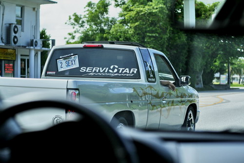
Crazy Toys商店
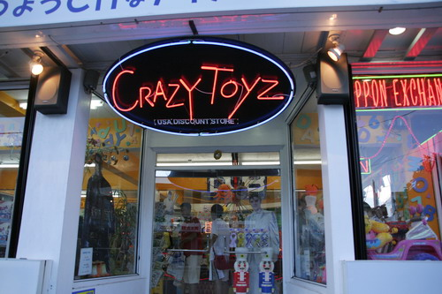
闷 @ Aug 18, 2006
周六上午，整个走廊空无一人，大厦的车库摆上围栏也放假休息了，我听着尹健的《分手吧》在工作前酝酿情绪。
昨天开始眼睛周围及额头长出一片一片的小疙瘩，正面看不出来，光线下或梢有角度就能看到，洗脸时手摸上去典型的“肉麻”。为了迎接旅行，生日前一天买了韩国LEIGE的眼霜，那些韩国美女演员的广告宣传非常有鼓动性和感染力，让人会盲目相信自己用了此品牌化妆品之后可以拥有瓷瓶般的肌肤，想象力更丰富的可以认为自己就会变成广告画上的人。我并不是过敏性皮肤，青春期的脸全被雀斑占领着，不见青春美丽疙瘩痘的踪影，这次...啊...太恐怖了...有人说是眼霜的营养成分太高，皮肤吸收不了，长出脂肪颗粒，是吗？无论如何，保佑在旅行的时候这些疙瘩全部消失掉！
和朋友去迪卡侬运动超市买浮潜用具，谈到信用卡在国内外使用会有不同的问题，朋友说国内外都一样，不用出示证件不用密码，核对签名即可。可我使用的经历是国内正规消费场所，使用信用卡必须出示身份证并签名，国外无须出示证件，只需核对签名。我想让朋友认同我的经验，可人家偏偏要证明其理论是正确的，在结帐时掏出双币卡，人家就给结了。然后朋友又掏出银行信用卡的使用说明给我看，上面的确写着“使用该卡时，一般不需要出示证件及密码，只需核对签名。”之前为了这个问题我们各持己见，进行了小小的争论...最后以官方说明书为正确使用标准......可后来朋友闷闷不乐的，人家的观点是：“争论毫无意义，只要自己知道事情真伪，根本没必要反驳错误观点。只要自己知道就可以了。”就事论事的讨论为什么会令对方那么不爽呢？态度也冷淡了。今天早晨起来我也开始有点郁闷，在我看来很无足轻重的事情，却令人家感到不愉快，究竟为什么？是不是在意见出现分歧的时候我该哄着别人开心才对呢？
如果我的母亲认为国外汇率和国内汇率不同，我一定会纠正她的认识，我不能让亲人继续持错误的认知。可是朋友却认为就让她这么认为好了，不用和她讨论是不是不同的问题，到时候就知道了，一直不知道说明她也用不上！有点让我难以理解的思维方式......
送快件的校友 @ Aug 17, 2006
“今天有个送快件的家伙，是中学高我几界的校友，那时他总是很拽很鸟的样子。”
“现在呢？”
“挺温和，不象过去那样了。”
CANON 50MM/1.8 @ Aug 13, 2006
下午转了好几个圈才找到艺风国美，在那里买了一只BENRO的铝合金三脚架，一只CANON 50MM/1.8的定焦镜头，性价比很高，老板740就卖给我了。毕竟是新手，老板和我讨论镜头的时候，我脸上一直冒汗，有个老手带着我去照相器材店总比我一个人去强。已是傍晚时分，还是忍不住开车去了东郊，今天的片子让我喜出望外，当时光线不算好了，利用我刚学到的摄影知识调整相机参数不断练习拍摄。主要用AV模式多一些，单反相机好就好在即使场景昏暗，依然可以拍摄出清晰明亮的图片，图片没有DC机那么多颗粒。那时侯背着一个大大的摄影包，浑身是汗，从东郊返回的途中心里乐呵呵地冒出一句话：“从此走上单反之路!:)”后来我给朋友的短信中串改了台词：“从此走上不归路。”
难道SIGMA 18-200MM的镜头真的很烂？老板告诉我变焦镜头最好不要超过4倍，当然定焦镜头更好。傍晚所有片子均用50MM/1.8拍摄，原厂镜头与附厂镜头真的有区别吗？不过这是我买了单反机后第一次在白天的户外拍摄，找时间要试试SIGMA 18-200MM，看看区别到底有多大？现在才理解人家文章里为什么写“一箱旧镜头”，套机的镜头托朋友在淘宝网上卖了，其实买了不过两周，只拍摄过一次，应该算是99新，加上滤光镜标价500人民币，老板讲可以标600卖的。希望有人把我之前、以后淘汰的镜头都买了去，箱子里的镜头永远都可以派上用场，也不会浪费了！
廖仲恺、何香凝墓的门口
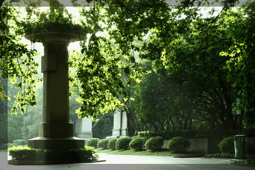
美人娇
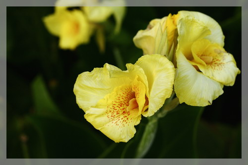
6个月大的拉布拉多犬

树上玫红色的花朵

胆小的博美和喜乐帝犬躲在主人脚下望着旁边的大型犬

当时光线非常暗，虽然画面对焦有点虚，光圈和ISO调整的还算满意，树干在构图中向左移三分之一就好了

水榭附近的汽车站
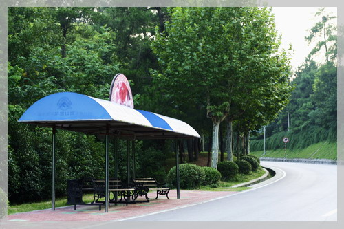
今天的晚餐

周末.无人之境 @ Aug 11, 2006
这会儿办公室里就剩我一个人，从走廊上的灯光可以知道隔壁两边的房间里还有人加班，几乎每个人都很忙，象小蚂蚁似的。我很享受这一刻，安静、松散、明亮，忙碌了一整天，这时候可以卸下所有的表情陷在座椅里想想我更需要怎样生活？思考，会让人提前衰老吗？我在想这些问题时感觉要挂了！
陈好在塞班 @ Aug 11, 2006
搜索“塞班”，无意间看到演员陈好在塞班的照片，真漂亮！那种漂亮很标志，有点味道就更好了。我并不喜欢标志美女，有些女孩子五官并不标志，但是搭配在一起很和谐，耐人寻味。除了脸蛋，气质也要好，气质在我看来由声音、举止、眼神、性格，包括智慧头脑、包括品味等等无可言状的因素构成。从照片看陈好的气质挺不错，身材也让人羡慕！
陈好的BLOG：陈好和你在一起
打开陈好的旅行箱
*SONY数码相机
*SONY笔记本电脑
*SONY Mp3
*SKⅡ补水面膜
*LA MER护肤套装
*GUCCI比基尼
*特别定制的宽檐草编帽
*书《河童旅行素描本》
钱 @ Aug 11, 2006
我不知是否应该接受那些钱，不仅是拿人家的手短，连说话的底气也会不足......我是否真的缺那些钱？

朋友在MSN上说其实没有多少人可以象我们这样生活......如果你买了房子，买了车，并且没有任何贷款，月收入大几千，那么在国内生活相对会轻松许多。我知道很多人省吃俭用的买车、贷款买房子，每月节衣缩食还房贷，即使年收入20多万人民币，也只能照顾好自己的家庭，消费仍然有限，如果再有个孩子，并想为父母兄弟姐妹改善生活条件，20多万的年收入并不宽裕。有人为了省手机费用，打电话过来响一声就挂，等你回过去他那边是免费接听；有人每天午饭只吃5元的盒饭；我的妈妈仍然保持着卖家庭废品的习惯；有人高温季节常常不开空调驾驶......有时适当的压力生活会让人感到充实，甚至有滋味。其实钱来得容易花起来自然蛮不在乎，那种生活也缺少珍惜的味道。昨天问一个同事这次去塞班带多少银子去消费？他说：“USD500…...”愕然！当时有一丝不安掠过我的心头，我不羡慕奢华但也害怕处于囊中羞涩之境。他工作十几年，有个小他9岁的太太，一个可爱的小女儿，每天看上去都很快乐的在工作，发奖金的时候有时可以看出他的沉默，同事们纷纷买房买车，他却纹丝不动的住着几十平米老房子，骑着自行车上班。我妈妈常说我太浪费，我也常常回答她：“有多少钱就过多少钱的生活。”可每每在节俭的人面前，我的悲情伤月、生活浪费的习惯与他们满足珍惜生活的态度相比总会显得幼稚而可悲！
快乐两面性 @ Aug 09, 2006
下午委托同事代办驾驶证公证的事，这样到国外可以租车驾车用。费用一共CNY350.00，其中100元是将驾照上的中文翻译成英文，区区几个字就要100元翻译费，真不要脸！最后同事带回来等翻译好了明天再带过去办理。公证的驾照中英文对照的，不知道是不是在所有国家都有效？目前知道在美国和澳大利亚可以使用公证的驾照。
我的情绪过了非常烦躁的阶段，奇怪的是经前综合症好象转移到了经后？！现在这会是麻木。似乎自己心理承受压力的能力不是很强，工作一忙一急，脑袋就“嗡”的被充满了，心情焦虑起来，这会不会也是责任心太强呢？除了感情之外，喜欢化繁为简去处理工作生活中的事情。但常常会有许多人喜欢化简为繁，一两句能解决的事情需要说上一二十句话。每个人都知道如何表现自己仅有的“能力”，这能力有时在我看来多少有些可笑而无聊！
《心理月刊》上讲：“好运会受到直觉的影响，要相信直觉给自己的暗示。有个女人爱情上总是走霉运，有次她去机场接她的BF，远远看到BF时她就想找个地方躲起来，不想让他看见......后来他们还是分了。”我发现我在爱情中总是尽力去维护表面的美好，即使实质上有问题，在没有决定离开之前并不希望让对方难堪、难过，这样是不是有些虚伪？因为我还要继续和这个人在一起，当然不希望对方认为这段感情这种关系是不美好的。有问题会毫不犹豫地提出来讨论，没能解决，影响了感受，感受不好培养不出好的感情，纵然如此，还是不会说感情不好了，自欺欺人？
我的手机开机语是：2006年，我要快乐！很多时候我不知道自己要的究竟是什么？构成快乐的因素有哪些？比如我刚买了单反相机，如果能买全原厂的长焦、定焦、广角三个镜头，我肯定会很快乐，之后我得捂紧钱包计划度日，一下花出去那么多钱，谁会不心疼？可节俭度日、收敛欲望会快乐吗？比如在CANON 50MM/1.8与50MM/1.0镜头之间我当然愿意买后者，可多出几千元RMB，买到手是快乐了，可季度奖金用掉了，旅游、买衣服、汽油费等等就要缩减开支了，这样又不快乐了。如果活得不那么自尊，伸手跟人要呗，可那样也未必快乐！看来快乐也是有两面性的！
劝人买单反的没一个好人！(zt) @ Aug 08, 2006
原文来自-数码单反之家
单反是好啊，但你不去钻研摄影技术，全用Auto，跟用DC有什么区别？？所以事先你得花上半年一年时间去学习学习摄影技术。
是啊，单反机身是便宜了，可镜头呢？套头有几个成像明显好过DC的啊？？
就是买个适马的18-200的烂头还要2700呢，腾龙的更要3500呢
何况近万的小白小黑、红圈金圈呢
光有变焦不行啊，玩单反的人不玩玩人像摄影怎么行？还得上定焦啊！
上了定焦也还不行啊，得找模特啊！老婆可以临时客串，可天天对着她“咔嚓”她烦你也腻啊，特别是要想来点专业和前卫的感觉，她不一定干啊，所以还得满大街去找“花姑娘”！
照完裸体，还得看清细节啊！所以，还要上微镜！
更别说一堆什么偏振镜、柔光镜、**镜......
不这样玩，你买单反干吗？？
有了基本技术，花了一大叠钱买了一堆器材，还不行啊！拍完了还得后期PS啊，否则，你对不起单反、对不起镜头、对不起RAW格式啊！
又得半年一年学习photoshop…...
机子有了，基本摄影技术也有了，PS也玩得不错了，行了吗？
不行，你回头瞧瞧你的柜子，一堆待处理的镜头!
和数码摄影天地里推出的技术指标更高的新镜头......
你的人生从此陷入一个痛苦的漩涡......
小聚会 @ Aug 07, 2006
 shot by Canon eos 350D
shot by Canon eos 350D
jiajialing周二回澳大利亚，上星期六晚上在1912老客茶站聚会，7个人4个人手上拿着数码单反相机，镜头各不相同，俨然成了摄影爱好者聚会了。数码单反目前所拍出来的片子没有我期待中的质量，清楚的照片没几张，很容易糊，画质不如F717好。有人说要炼就一双铁手才行。也许在AV、TV模式下需要三脚架，自动模式应该好一些。还有两周就要出发去塞班了，有个先去的同事回来讲那里很不错，吃喝消费不算高，还可以租车租船，他租了辆哈雷式的摩托车，租了条船出海两天......晒得很黑回来了！我开始有点小兴奋，要尽快办张双币信用卡。
我的新镜头 @ Aug 04, 2006
SIGMA 18-200mm F3.5-6 远摄变焦镜头
镜头全长约78.5mm，重量比18-125mm重了约10克，但仍有405克，是同类镜头中重量优势明显，符合便携要求。如果将跨在62mm口径的镜头前端的红色线条改成银色的就好了。尤其喜欢镜头表面处理，磨砂泛黑，手感很不错。大大遮光照让摄影跟有感觉！可是佳能机器拍出来的照片过于柔和，我喜欢有力度的那种效果！
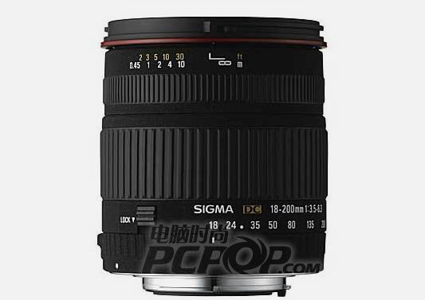
无题·图 @ Aug 02, 2006
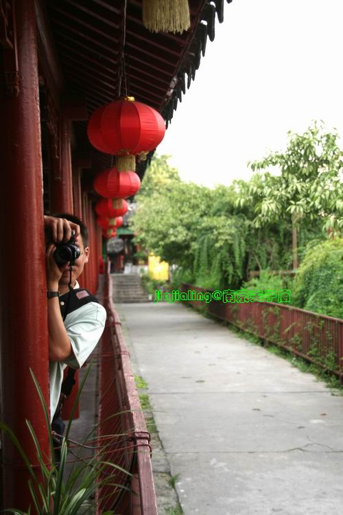
夏日焦虑 @ Aug 02, 2006
大约一周左右的时间我有焦虑的情绪，为知名和不知名的事情，真的需要好好放松休息一下了。上周工作特别忙，到了夜晚还能感到那种压迫感，早晨5点多钟会醒一次，想睡却怎么也睡不着，上班时困得人头疼。无数的梦把夜晚的睡眠塞得满满的，杂乱、压力、窒息...无休止地骚扰着我的睡眠。说话累，没有笑的欲望，最近拍出来的照片没有笑容，神态衰老，年龄无时无刻不在提醒着你在即定的时段做应该做的事情。一次次重复去证明一个不变的事实，不知出于何故？生活可有惊喜与奇迹存在？
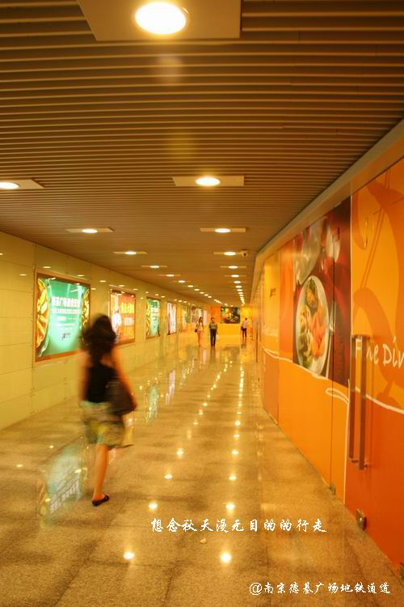